PyTorch · 核心原理图谱
深度学习框架:动态图 eager 执行 + autograd 反向求导,Tensor/ATen 算子分发,编译栈加速。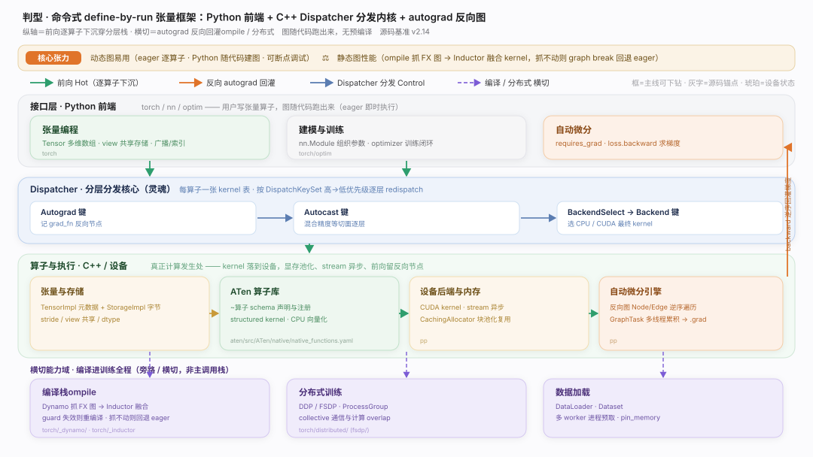
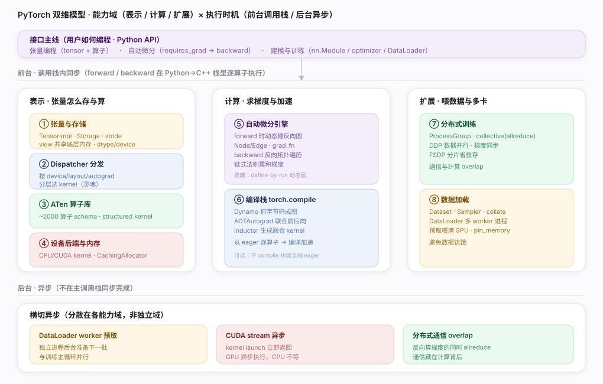
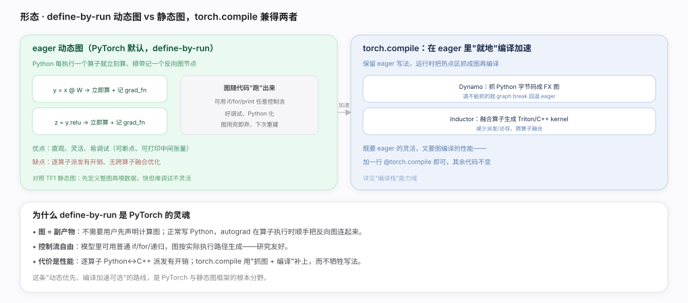
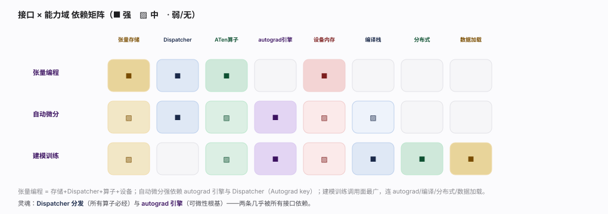
torch.cuda.synchronize，否则测的是 launch 时间。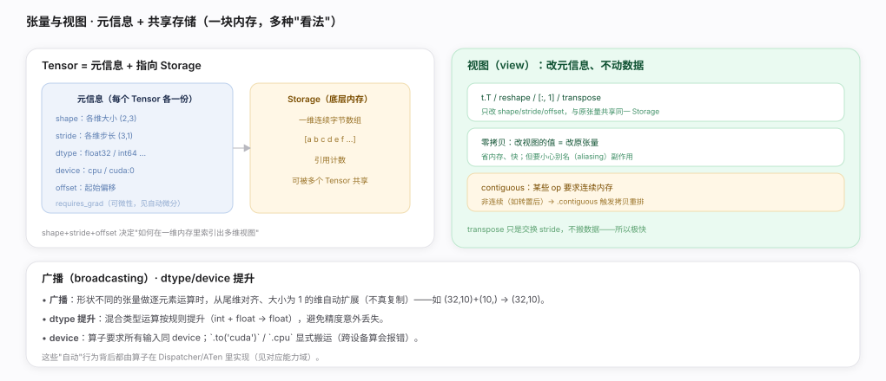
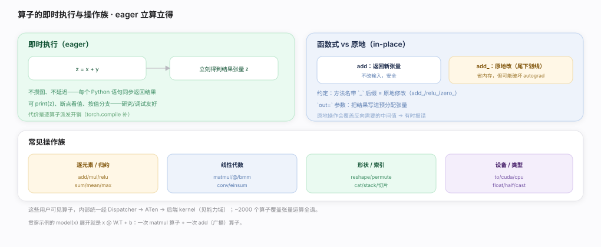
pytorch/pytorch v2.13.0。.contiguous()。float16/bfloat16 + autocast 省显存提速。non_blocking=True + pin_memory 重叠传输。.clone。x.add_ 可能覆盖反向所需中间值、改版本计数导致 backward 报错。.to 对齐 device（Device.h:31）。ScalarType.h）。| 属性 | 含义 | 锚点 |
|---|---|---|
| shape/stride | 多维视图如何映射一维内存 | c10/core/TensorImpl.h:619 |
| dtype | float32/16/bf16/int64… | c10/core/ScalarType.h |
| device | cpu/cuda:N | c10/core/Device.h:31 |
| storage_offset | 切片起始偏移 | c10/core/TensorImpl.h:2912 |
| is_contiguous | 内存是否连续（缓存位） | c10/core/TensorImpl.h:2964 |
| requires_grad | 是否追踪梯度（见自动微分主线） | c10/core/TensorImpl.h:1404 |
| Python Tensor 壳 | 继承 TensorBase | torch/_tensor.py:102 |
| 写法 | 语义 | 内存 | 对 autograd | 例 |
|---|---|---|---|---|
y = x.add(z) | 返回新张量 | 新分配输出 | 安全 | native_functions.yaml:536（add.Tensor） |
x.add_(z) | 原地改 x | 复用 x 存储、改版本计数 | 可能破坏 saved 中间值 | native_functions.yaml:548（add_.Tensor） |
torch.add(x,z,out=o) | 写进 o | 复用预分配 o | o 若被 saved 亦有风险 | native_functions.yaml:559（add.out） |
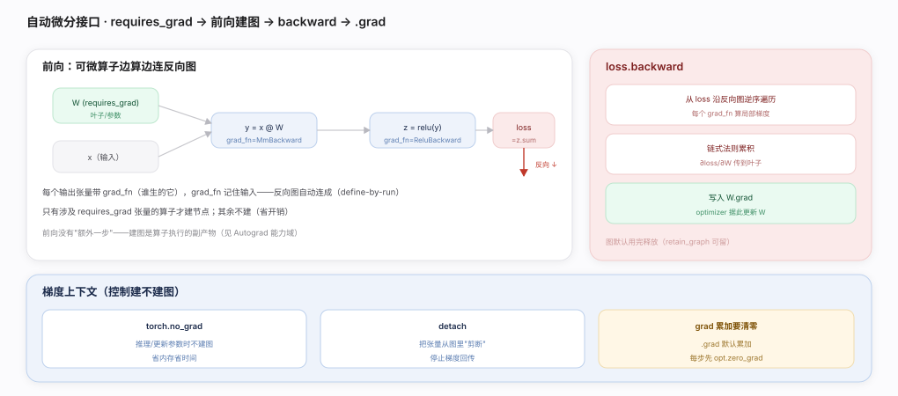
requires_grad、前向自动建反向图、backward 得梯度。它是训练的核心，强依赖自动微分引擎（图与遍历）与 Dispatcher（Autograd key 建节点）。核实基准：官方源码 pytorch/pytorch v2.13.0。requires_grad_ 经 set_requires_grad（TensorImpl.h:1404）加 Autograd 键并分配 AutogradMeta，前向每个可微算子在 Autograd 层用 collect_next_edges+set_history 留下 grad_fn 节点连成动态反向图（define-by-run）；Tensor.backward（_tensor.py:566）驱动 Engine::execute 沿图逆序遍历、链式累积梯度到叶子 .grad 供 optimizer 更新；no_grad/inference_mode/detach 控制建不建图、.grad 累加需每步 zero_grad——这是 PyTorch 训练的核心机制。with torch.no_grad:（grad_mode.py:22）或 inference_mode（:213）——省内存省时间。loss.item/.detach，别拖着整张图不释放。autograd.Function 写 forward+backward。.grad（variable.h:228）累加导致梯度错误、训练发散。no_grad/inference_mode。gradient= 或先归约成标量（autograd/__init__.py:255）。| 接口 | 作用 | 锚点 |
|---|---|---|
requires_grad_(True) | 标记张量需要梯度 | c10/core/TensorImpl.h:1404 |
.backward | 从标量反向求梯度 | torch/_tensor.py:566 → autograd/__init__.py:255 |
.grad | 累积的梯度（叶子张量上） | torch/csrc/autograd/variable.h:228 |
torch.autograd.grad(...) | 显式求某些输出对某些输入的梯度 | torch/autograd/__init__.py:407 |
torch.no_grad / inference_mode | 关闭建图 | grad_mode.py:22 / :213 |
.detach | 切断梯度流（共享数据、清 grad_fn） | torch/_tensor.py（TensorBase） |
.register_hook | 梯度流经时的钩子 | torch/_tensor.py:655 |
torch.autograd.Function | 自定义前向/反向 | torch/autograd/function.py |
| 方式 | 建反向图 | 版本计数追踪 | 典型用途 | 锚点 |
|---|---|---|---|---|
no_grad() | 否 | 仍追踪 | 推理、optimizer.step 内更新参数 | grad_mode.py:22 |
inference_mode() | 否 | 否（更省、张量不可再入图） | 纯推理服务 | grad_mode.py:213 |
.detach() | 否（就地剪断该张量） | 共享存储 | 截断部分梯度流、记录 loss 值 | torch/_tensor.py |
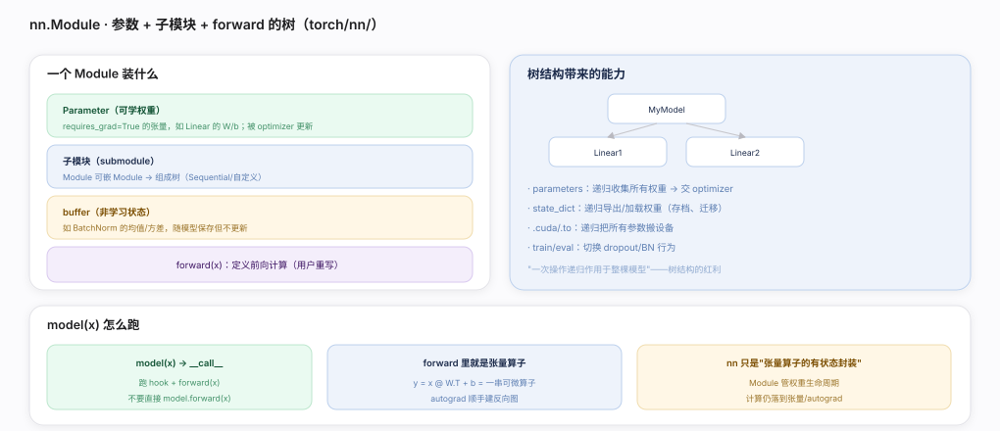
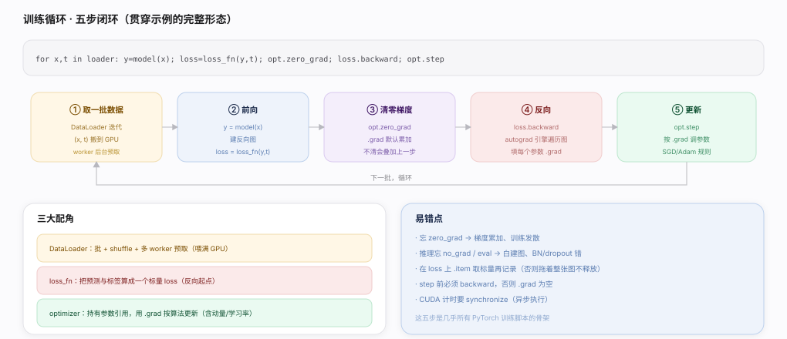
nn.Module 组织带权重的模型、用训练循环学习。它把张量编程 + 自动微分封装成"搭模型 + 训模型"的工作流，连接自动微分引擎、数据加载、分布式训练、编译栈多个能力域。核实基准：官方源码 pytorch/pytorch v2.13.0（torch/nn/modules/module.py、torch/optim/）。model.train（module.py:2885）/ model.eval（BN/dropout 行为不同）。torch.autocast + GradScaler 省显存提速。model = torch.compile(model) 通常显著提速（见编译栈）。DistributedDataParallel（见分布式训练）。DataLoader(num_workers=N, pin_memory=True) 避免数据饥饿。model.forward(x)：绕过 _call_impl（module.py:1782）里的 hook；应 model(x)。loss.item 取标量，否则整张图不释放、显存涨。register_parameter/挂子模块才被 parameters（module.py:2665）收集。set_to_none=True（optimizer.py:1024）置空而非填 0，语义与显存略有差异。| 类别 | 常用 | 锚点/说明 |
|---|---|---|
| Module 基类 | 参数/子模块/buffer 的树 | torch/nn/modules/module.py:407 |
| register_parameter/buffer | 登记可学权重 / 状态 | module.py:592 / :528 |
| parameters / state_dict | 收集权重 / 存取 | module.py:2665 / :2194 |
| __call__ / _call_impl | 跑 hook + forward | module.py:85 / :1782 |
| Optimizer | 持 param_groups + state | torch/optim/optimizer.py:339 |
| zero_grad / step | 清梯度 / 更新 | optimizer.py:1024 / :1093 |
| SGD.step | 动量更新示例 | torch/optim/sgd.py:106 |
| 步 | 动作 | 读 | 写 | 锚点 |
|---|---|---|---|---|
| 1 取批 | DataLoader 预取 batch | 磁盘/内存 | (x,t) 张量 | torch/utils/data/dataloader.py:149 |
| 2 前向 | model(x)+loss | 参数 | 反向图 + loss | module.py:1782 |
| 3 清梯度 | zero_grad | — | .grad=None | optimizer.py:1024 |
| 4 反向 | loss.backward | 反向图 | 各参数 .grad | engine.cpp:1294 |
| 5 更新 | opt.step | .grad + state | 参数 + momentum_buffer | optimizer.py:1093 / sgd.py:145 |
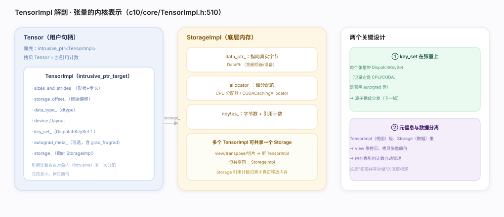
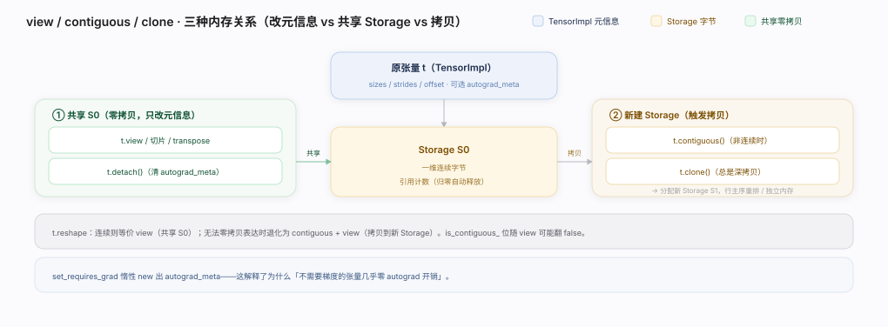
pytorch/pytorch v2.13.0（HEAD cf30153）。intrusive_ptr<TensorImpl>（TensorBase 唯一成员 impl_）：TensorImpl 装元信息（sizes_and_strides / storage_offset / data_type / key_set / 可选 autograd_meta）+ 指向可共享的 StorageImpl（DataPtr + allocator + 引用计数）；元信息与数据分离使 view 零拷贝、张量拷贝廉价、内存引用计数自动回收，而张量上的 DispatchKeySet（key_set_）正是算子分发与"自动 autograd/设备"的起点。sizes_and_strides_）；需独立副本才 .clone。.untyped_storage() 查底层 StorageImpl、.data_ptr() 比对是否共享内存、.storage_offset() 看切片偏移。storage_ 为空）用于形状推断/编译，零显存——正是 structured kernel 的 meta 阶段所用。.contiguous() 一次，避免算子内部反复隐式重排。TensorBase.h:928），重的是 StorageImpl 的字节。is_contiguous_ 缓存位会随 view 失效。key_set_（TensorImpl.h:3055）决定张量触发哪些分发层，是"自动 autograd/设备"的根源。:2917/:2964），改形状的算子负责刷新，读取是 O(1)。| 字段 | 含义 | 锚点 |
|---|---|---|
impl_（薄壳） | TensorBase 唯一成员，intrusive_ptr | aten/src/ATen/core/TensorBase.h:928 |
sizes_and_strides_ | 多维视图如何映射一维内存（内联小向量） | c10/core/TensorImpl.h:619（sizes()） |
storage_offset_ | 起始偏移（切片用） | c10/core/TensorImpl.h:2912 |
data_type_ | dtype（TypeMeta） | c10/core/TensorImpl.h:2921 |
key_set_ | 触发哪些分发层（device/autograd） | c10/core/TensorImpl.h:3055 |
autograd_meta_ | grad_fn / grad（可选，惰性分配） | c10/core/TensorImpl.h:2901 |
storage_ | 共享的底层内存（Storage） | c10/core/TensorImpl.h:2875 |
data_ptr_ | 裸指针 + 删除器 + 设备 | c10/core/StorageImpl.h:378 |
allocator_ | 归还内存到哪个分配器 | c10/core/StorageImpl.h:397 |
| 操作 | 新 TensorImpl | 共享 Storage | 触发拷贝 | 说明 |
|---|---|---|---|---|
t.view(...) / 切片 / transpose | 是 | 是 | 否 | 只改 sizes/strides/offset；is_contiguous_ 位（TensorImpl.h:2964）可能翻成 false |
t.contiguous() | 是 | 否（已连续则原样返回） | 非连续时是 | 按行主序重排到新 Storage，is_contiguous_default 判定见 TensorImpl.h:841 |
t.clone() | 是 | 否 | 总是 | 深拷贝一份独立 Storage |
t.reshape(...) | 是 | 尽量共享 | 无法零拷贝表达时才拷贝 | 连续则等价 view，否则退化为 contiguous+view |
t.detach() | 是 | 是 | 否 | 共享数据但 autograd_meta_ 清空、切断梯度 |
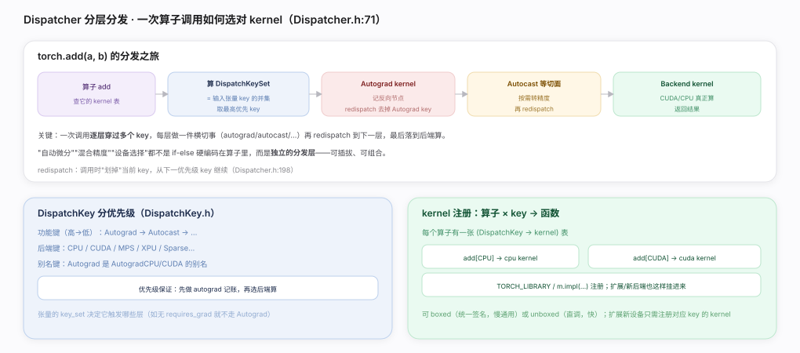
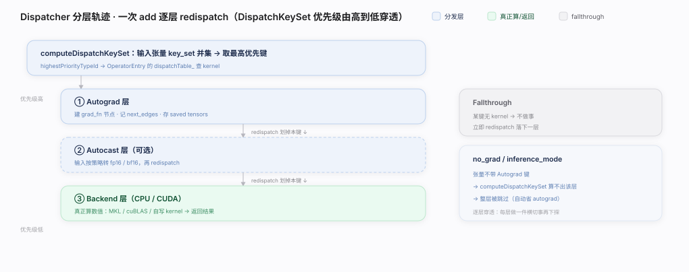
pytorch/pytorch v2.13.0（aten/src/ATen/core/dispatch/Dispatcher.h:71）。computeDispatchKeySet 从输入张量 key_set 并集算出本次调用的 DispatchKeySet、highestPriorityTypeId 取最高优先键去 OperatorEntry 的 dispatchTable_ 查 kernel——先经 Autograd 层记反向图、再经 Autocast 切面、最后落 Backend(CPU/CUDA) kernel，每层做完 redispatch 划掉自己继续下探；autograd/混合精度/设备选择都做成可插拔可组合的分发层而非硬编码，扩展新后端/新算子只需按 DispatchKey 用 TORCH_LIBRARY_IMPL 注册 kernel。TORCH_LIBRARY（torch/library.h:974）+ TORCH_LIBRARY_IMPL 注册到对应 key，融入分发体系。registerFallback（Dispatcher.h:294）兜底。DispatchKey.h:315），靠张量携带 Autograd 键触发。dispatchTable_ 查表分发到对应 kernel（OperatorEntry.h:182）。Dispatcher.h:621），一次调用穿多层、每层划掉自己再往下。KernelFunction.h:155）。| 概念 | 含义 | 锚点 |
|---|---|---|
| DispatchKey | CPU/CUDA/Autograd/Autocast/Sparse… 枚举 | c10/core/DispatchKey.h:136 |
| DispatchKeySet | 张量携带的 key 集合（位集） | c10/core/DispatchKeySet.h:167 |
| computeDispatchKeySet | 从输入张量算出本次调用的 key 集 | DispatchKeyExtractor.h:24 |
| highestPriorityTypeId | 取集合里最高优先键 | DispatchKeySet.h:430 |
| OperatorEntry | 单算子的 (key→kernel) 表 | OperatorEntry.h:70 |
| dispatchTable_ / lookup | 定长 kernel 数组 / 查表 | OperatorEntry.h:237 / :182 |
| redispatch | 划掉当前 key 从下一优先级继续 | Dispatcher.h:621 |
| KernelFunction boxed/unboxed | 装箱通用调用 / 直调 | KernelFunction.h:130 / :155 |
| fallback（兜底） | 某 key 无 kernel 时的后端兜底 | Dispatcher.h:294 |
| 层（DispatchKey） | 干什么 | 之后 | 锚点 |
|---|---|---|---|
| Autograd | 建 grad_fn 节点、记 next_edges、存 saved tensors | redispatch 去掉 Autograd 键 | DispatchKey.h:315（AutogradOther） |
| Autocast（可选） | 把算子输入按策略转 fp16/bf16 | redispatch 去掉 Autocast 键 | DispatchKey.h:334（AutocastCPU） |
| Backend（CPU/CUDA） | 真正算数值（调 MKL/cuBLAS/自写 kernel） | 返回结果 | OperatorEntry.h:182（lookup） |
| Fallthrough | 该键无 kernel，直接落下一层不做事 | 立即 redispatch | KernelFunction.h:110（isFallthrough） |
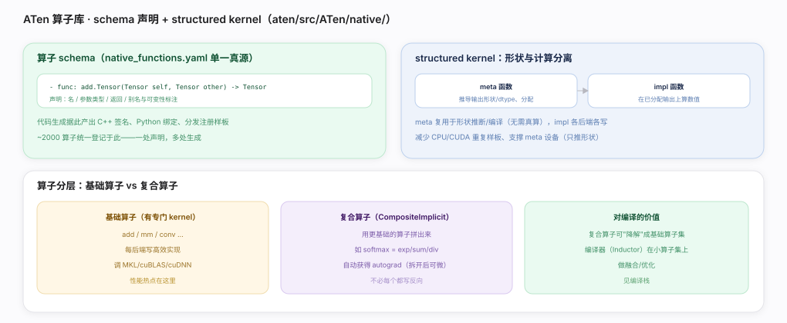
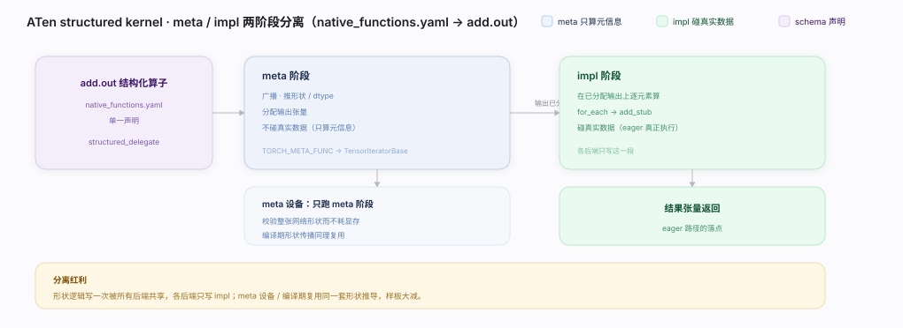
pytorch/pytorch v2.13.0（aten/src/ATen/native/）。TORCH_META_FUNC+TORCH_IMPL_FUNC）复用 TensorIterator 的形状推导与广播框架。device='meta'）跑一遍只走 meta 阶段，可验证形状而不耗显存。native_functions.yaml）+ torchgen/gen.py 代码生成统一样板。structured_delegate 到 add.out（:538），真正计算在 out 版的 meta+impl。add_stub，非纯朴素手写。| 概念 | 含义 | 锚点 |
|---|---|---|
| native_functions.yaml | 算子 schema 单一真源 | aten/src/ATen/native/native_functions.yaml:536 |
| structured_delegate | 用户版把计算委托给 out 版 | native_functions.yaml:538 |
| structured: True | 该 out 算子走 meta+impl 框架 | native_functions.yaml:559 |
| TORCH_META_FUNC2 | 形状/dtype 推导（meta 阶段） | aten/src/ATen/native/BinaryOps.cpp:151 |
| TensorIteratorBase | 广播/形状/逐元素循环引擎 | aten/src/ATen/TensorIterator.h:246 |
| add_stub | 逐元素 kernel 分发桩 | aten/src/ATen/native/BinaryOps.cpp:437 |
| 代码生成 | 从 schema 产签名/绑定/注册 | torchgen/gen.py:2750 |
| dispatch: 后端表 | 稀疏/mkldnn/nested 等特化 | native_functions.yaml:540 |
| 阶段 | 职责 | 是否碰真实数据 | 复用场景 | 锚点 |
|---|---|---|---|---|
| meta | 广播、推形状/dtype、分配输出 | 否（只算元信息） | meta 设备、编译期形状传播 | BinaryOps.cpp:151 → TensorIterator.h:246 |
| impl | 在已分配输出上逐元素算 | 是 | eager 真正执行 | TensorIterator.h:444（for_each）→ add_stub |
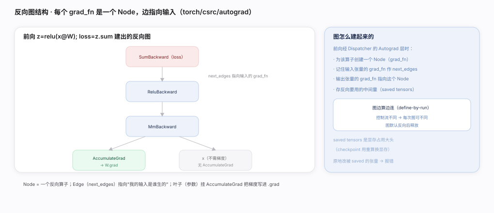
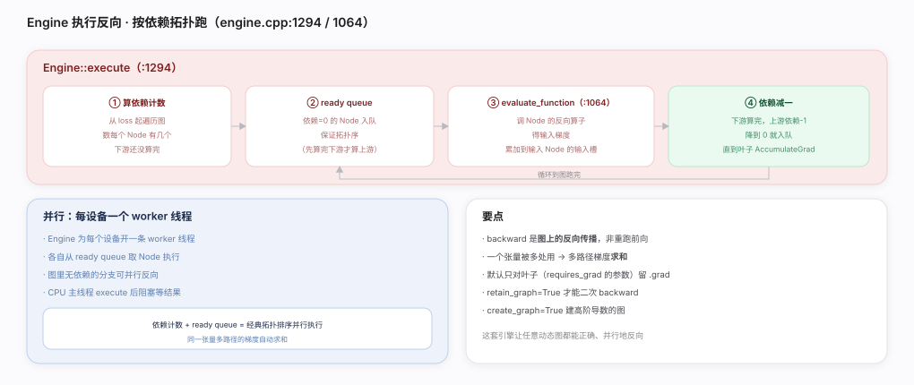
pytorch/pytorch v2.13.0（torch/csrc/autograd/）。checkpoint（重算换显存，少存 SavedVariable，saved_variable.h:22）。create_graph=True（让反向算子本身建图）；一般训练不用。engine.h:236），无依赖分支同时跑。apply。retain_graph。.grad，需 retain_grad。| 组件 | 职责 | 锚点 |
|---|---|---|
| Node（Function） | 一个反向算子节点 | torch/csrc/autograd/node.h:112 |
| next_edges_ | 指向输入 Node 的边 | node.h:681 |
| collect_next_edges / set_history | 建图：连边 + 记 grad_fn | function.h:71 / functions/utils.h:67 |
| AutogradMeta | 张量上的 grad_fn/grad | variable.h:225 |
| SavedVariable / unpack | 反向所需中间量（显存大头） | saved_variable.h:22 / saved_variable.cpp:130 |
| Engine::execute | 反向入口 | engine.cpp:1294 |
| compute_dependencies | 算每 Node 依赖计数 | engine.cpp:1256 |
| evaluate_function | 执行单 Node + 递减依赖 | engine.cpp:1064 |
| ReadyQueue（优先队列） | 拓扑序调度 + per-device | engine.h:86 / :236 |
| thread_main | worker 主循环 | engine.cpp:518 |
| 步骤 | 数据结构 | 关键动作 | 锚点 |
|---|---|---|---|
| 建依赖 | dependencies_ map | 遍历 next_edges，计数 +1 | engine.cpp:1256 |
| 初始就绪 | ReadyQueue | 依赖=0 的 root 入队 | engine.cpp:232 |
| 执行 Node | apply / InputBuffer | 算局部梯度、累加到输入 | engine.cpp:1064 / node.h:616 |
| 递减依赖 | dependencies_ / not_ready_ | --计数；到 0 入队否则暂存 | engine.cpp:1180 附近 |
| 叶子收敛 | AccumulateGrad | 写入张量 .grad | variable.h:230（grad_accumulator_） |
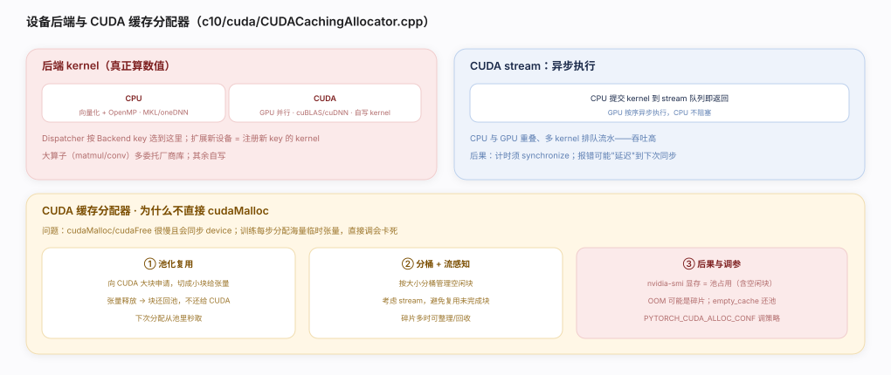
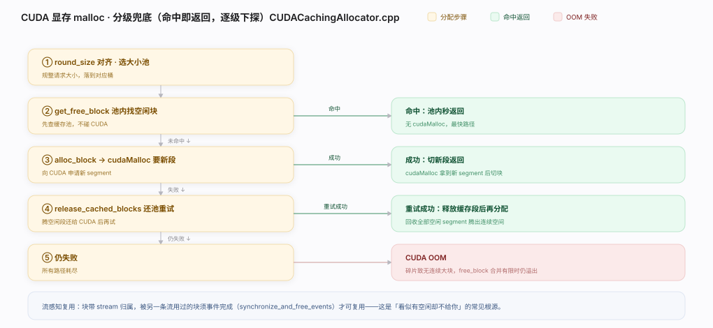
pytorch/pytorch v2.13.0（c10/cuda/CUDACachingAllocator.cpp）。torch.cuda.synchronize（stream 异步，否则测的是 launch 时间）。empty_cache（触发 release_cached_blocks，:4059）、PYTORCH_CUDA_ALLOC_CONF=expandable_segments。non_blocking=True + pin_memory 重叠 H2D 传输；用 getStreamFromPool（CUDAStream.h:203）另开流做通信/计算重叠。free 只还池不还 CUDA，:2474），非泄漏。release_cached_blocks）、反而变慢；仅在必要时用。get_free_block 查池（:3710），池空才 alloc_block（:3843）。free_block（:3505）合并有限时仍会 OOM。| 组件 | 职责 | 锚点 |
|---|---|---|
| CPU/CUDA kernel | 后端数值计算 | aten/src/ATen/native/{cpu,cuda} |
| DeviceCachingAllocator | 每设备显存池 | c10/cuda/CUDACachingAllocator.cpp:1426 |
| malloc / free | 分配（先查池） / 释放（还池） | CUDACachingAllocator.cpp:1722 / :2474 |
| get_free_block / alloc_block | 池内找块 / 真 cudaMalloc | :3710 / :3843 |
| round_size | 对齐到 512B 倍数 | :3062 |
| release_cached_blocks | 归还空闲块给 CUDA | :4059 |
| CUDAStream | 异步执行队列 | c10/cuda/CUDAStream.h:60 |
| 大小阈值常量 | kMinBlockSize/kSmallSize/kRoundLarge | c10/core/AllocatorConfig.h:18/20/24 |
| 层级 | 动作 | 命中即返回 | 锚点 |
|---|---|---|---|
| 1 | round_size 对齐、选大小池 | — | :3062 |
| 2 | get_free_block 池内找现成空闲块 | 是（最快，无 CUDA 调用） | :3710 |
| 3 | alloc_block 调 cudaMalloc 要新段 | 是 | :3843 |
| 4 | release_cached_blocks 还池后重试 | 是 | :4059 |
| 5 | 仍失败 → 报 CUDA OOM | 否 | malloc 内（:1722） |
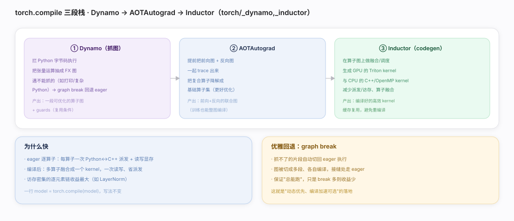
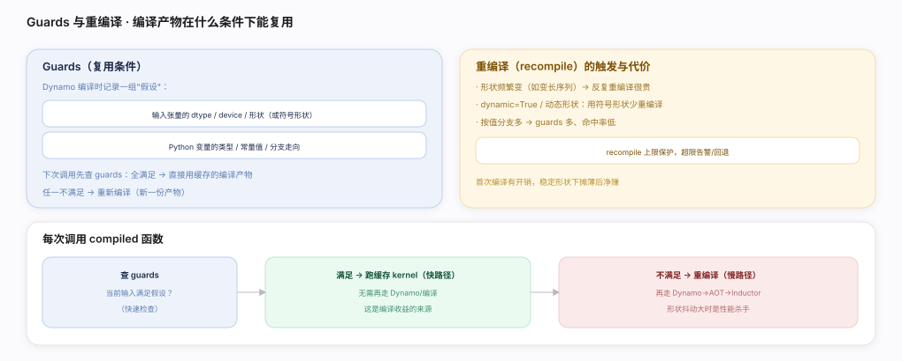
pytorch/pytorch v2.13.0（torch/_dynamo/、torch/_inductor/）。torch.compile(model) 起步；mode="max-autotune" 让 Inductor 自动调 kernel 参数更激进。dynamic=True 走符号形状减重编译（否则每种形状一份 GuardedCode）。torch._dynamo.explain 可诊断 break 点。convert_frame.py:1903）可能比 eager 还慢；用动态形状。torch.compile 即可，写法不变；抓不动处自动 graph break。aot_autograd.py:1131）连反向一起 trace，训练也被优化。| 组件 | 职责 | 锚点 |
|---|---|---|
| torch.compile / optimize | 公开入口 → OptimizedModule | torch/__init__.py:2609 / eval_frame.py:1669 |
Dynamo _compile | 字节码符号执行抓 FX 图 | torch/_dynamo/convert_frame.py:1633 |
| call_user_compiler | 把图交给后端编译 | torch/_dynamo/output_graph.py:3046 |
| build_guards / GuardedCode | 生成复用条件 + 缓存产物 | convert_frame.py:1903 / :1919 |
| AOTAutograd | 前后向联合 trace + 降解 | torch/_functorch/aot_autograd.py:1131 |
| Inductor compile_fx | 后端 lower + codegen 入口 | torch/_inductor/compile_fx.py:2685 |
| Scheduler.fuse_nodes | 算子融合 | torch/_inductor/scheduler.py:4986 |
| TritonScheduling.codegen_kernel | 生成 Triton kernel | torch/_inductor/codegen/triton.py:6336 |
| 段 | 输入 | 输出 | 抓不动时 | 锚点 |
|---|---|---|---|---|
| Dynamo | Python 字节码帧 | FX 图 + guards | graph break 回退 eager | convert_frame.py:1633 |
| AOTAutograd | FX 前向图 | 前向+反向联合图（core aten） | 降解失败则保留复合算子 | aot_autograd.py:1131 |
| Inductor | 联合算子图 | 融合后的 Triton/C++ kernel | 不支持的算子回退调 eager kernel | compile_fx.py:2685 |
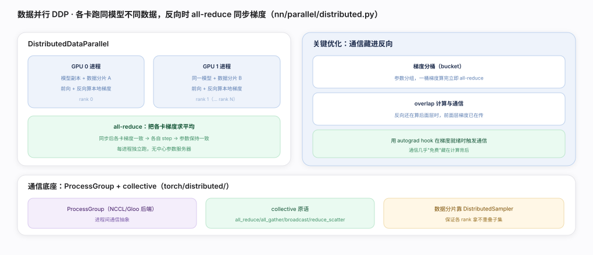
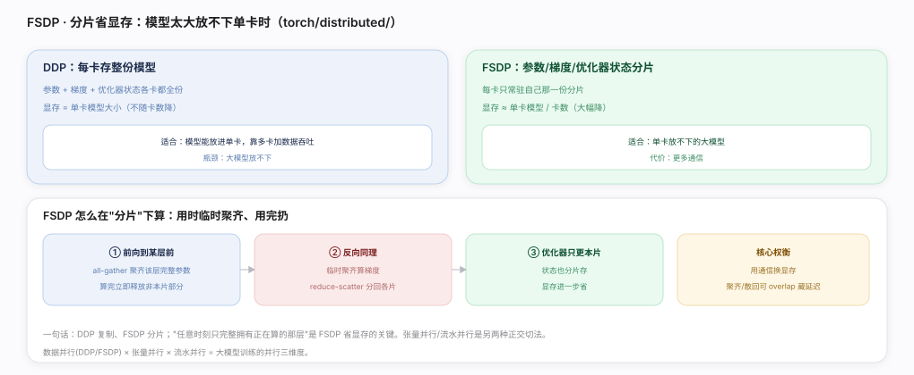
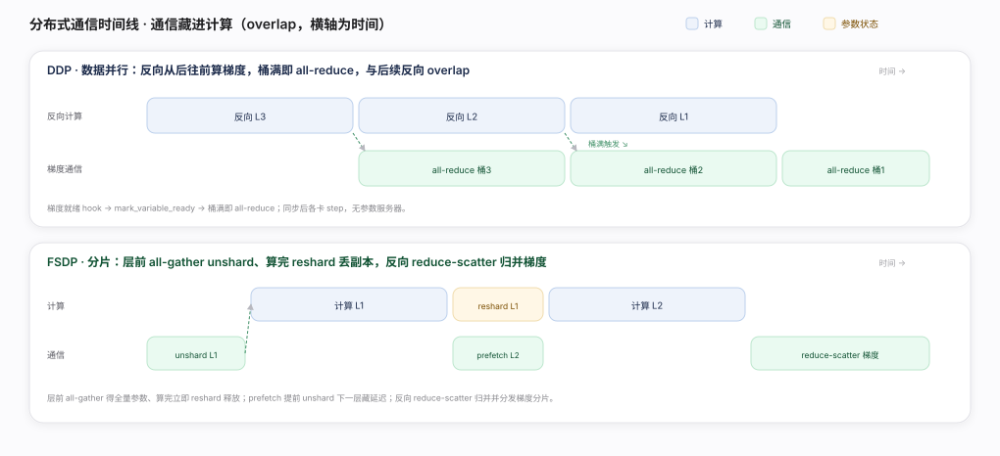
pytorch/pytorch v2.13.0（torch/csrc/distributed/c10d/、torch/nn/parallel/distributed.py、torch/distributed/fsdp/）。bucket_cap_mb 让梯度桶大小与 overlap 生效。_fsdp_param_group.py）。all_reduce_bucket（reducer.cpp:978）与 FSDP 的 all-gather 都尽量 overlap 藏进计算。reducer.cpp:202），Python 只转发。| 组件 | 职责 | 锚点 |
|---|---|---|
| DistributedDataParallel | 数据并行外壳 | torch/nn/parallel/distributed.py:466 |
| Reducer | 梯度桶 + hook + all-reduce | torch/csrc/distributed/c10d/reducer.cpp |
| autograd_hook / mark_variable_ready | 梯度就绪触发 | reducer.cpp:202 / :895 |
| all_reduce_bucket | 一桶就绪即发 all-reduce | reducer.cpp:978 |
| fully_shard（FSDP2） | 参数/梯度/优化器分片 | torch/distributed/fsdp/_fully_shard/_fully_shard.py:64 |
| unshard / reshard | 用时聚齐 / 用完释放 | _fsdp_param_group.py:372 / :499 |
| foreach_all_gather / foreach_reduce | 聚参数 / 归约梯度 | _fsdp_collectives.py:325 / :522 |
| ProcessGroup / collective | NCCL/Gloo + all_reduce 等原语 | torch/csrc/distributed/c10d/ |
| 维度 | DDP | FSDP |
|---|---|---|
| 每卡参数 | 整份副本 | 仅本片 |
| 显存随卡数 | 不降（模型放不下即卡） | ≈ 模型/卡数 |
| 通信原语 | all-reduce（梯度） | all-gather（参数）+ reduce-scatter（梯度） |
| 通信量 | 较少 | 较多（换显存） |
| 触发点 | 梯度就绪 hook（reducer.cpp:895） | 层前 unshard / 层后 reshard（_fsdp_param_group.py:372/499） |
| 适用 | 单卡放得下 | 超大模型放不下单卡 |
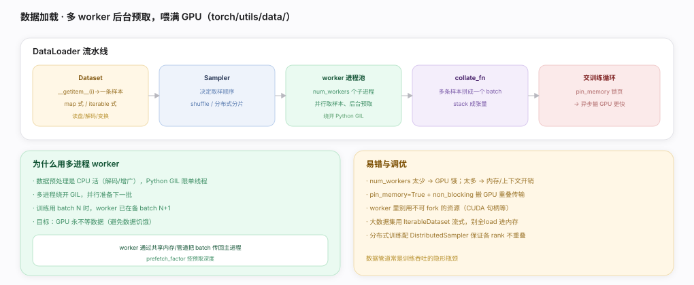
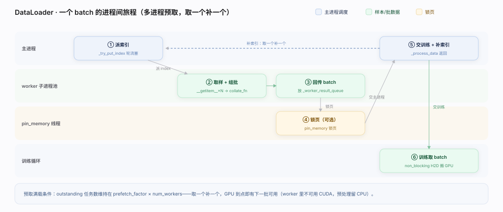
pytorch/pytorch v2.13.0（torch/utils/data/）。num_workers：太少 GPU 饿、太多内存/切换开销，按 CPU 核与 IO 实测。pin_memory=True（起 pin_memory_thread，pin_memory.py:18）+ non_blocking=True：重叠 CPU→GPU 传输。prefetch_factor（默认 2，dataloader.py:293）：加大平滑抖动、代价是内存。IterableDataset 流式（走 _IterableDatasetFetcher），别全 load 进内存。DistributedSampler，各 rank 拿不重叠子集。_process_data）。_worker_result_queue 反压。dataloader.py:1111 校验），多进程下须 ≥1。| 组件 | 职责 | 锚点 |
|---|---|---|
| DataLoader | 批 + 多 worker + 预取 | torch/utils/data/dataloader.py:149 |
| _MultiProcessingDataLoaderIter | 多进程迭代器 | dataloader.py:791 |
| _worker_loop | worker 主循环取样 | torch/utils/data/_utils/worker.py:244 |
| Fetcher（map/iterable） | 调 __getitem__ + collate | torch/utils/data/_utils/fetch.py |
| _index_queues / _worker_result_queue | 派索引 / 收 batch | dataloader.py:1187 / :1134 |
| _try_put_index / _process_data | 补任务 / 取 batch | dataloader.py:1531 / :1563 |
| prefetch_factor（默认 2） | 每 worker 预取深度 | dataloader.py:293 |
| _pin_memory_loop / pin_memory | 锁页加速 H2D | _utils/pin_memory.py:18 / :55 |
| 步骤 | 位置 | 动作 | 锚点 |
|---|---|---|---|
| 派索引 | 主进程 | 轮流塞 index 到各 worker 队列 | dataloader.py:1531 |
| 取样+组批 | worker 子进程 | __getitem__ × N → collate_fn | _utils/worker.py:244 |
| 回传 batch | worker→主 | 放 _worker_result_queue | dataloader.py:1134 |
| 锁页（可选） | pin_memory_thread | pin_memory 锁页 | _utils/pin_memory.py:18 |
| 交训练 | 主进程 | _process_data 返回 + 补索引 | dataloader.py:1563 |